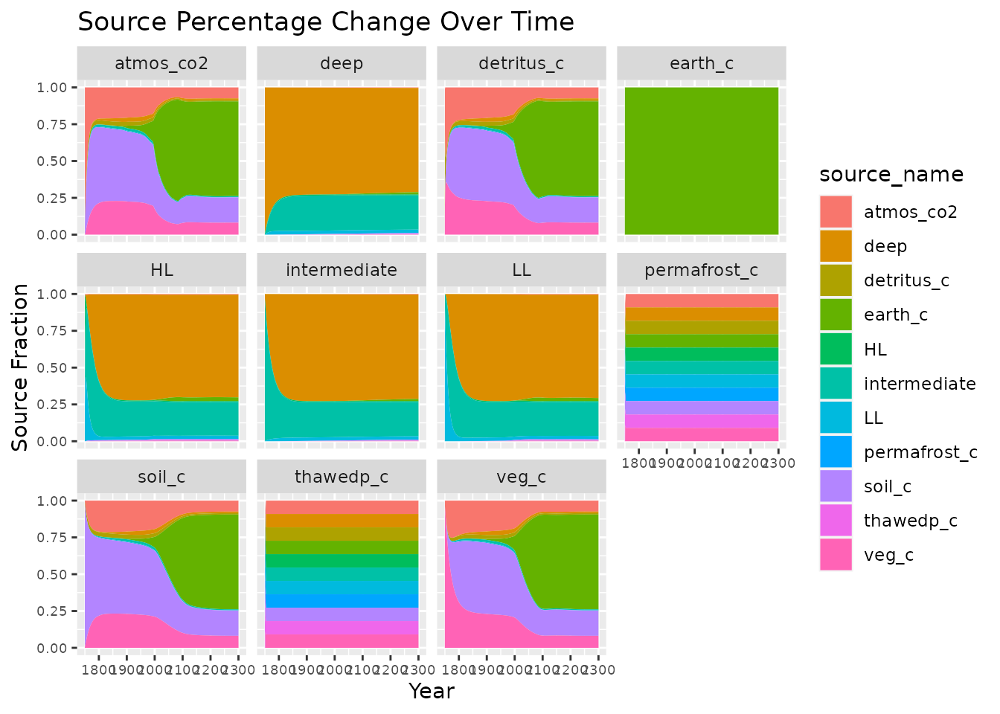

Carbon tracking with Hector
R
Leeya Pressburger
2021-08-03
Source:vignettes/articles/ex_carbon_tracking.Rmd
ex_carbon_tracking.RmdIntroduction
This vignette will walk through Hector’s carbon tracking feature and show how to turn on tracking, retrieve the tracking data, and display the results. Additionally, the vignette demonstrates an application of the carbon tracking feature and shows how to calculate the model’s airborne fraction.
Hector’s carbon tracking feature helps to trace the movement of carbon between various pools as the model runs. At the user-chosen start date, each pool is deemed to be composed of 100% carbon from itself, i.e. at that moment in time the deep ocean pool is 100% composed of carbon from the deep pool.
As the model moves forward in time from the start date, Hector tracks each pool’s fractional composition – i.e. the sources of its current carbon. When the run is finished, this data can be read into R and then analyzed.
Carbon tracking
Now, we will read in an INI file and create a new core. In this example, we will use SSP245.
In order to use the carbon tracking feature, we must use
setvar and fetchvars. 1 First, let’s look at
the trackingDate prior to setting it to any value.
inifile <- file.path(system.file("input", package = "hector"),
"hector_ssp245.ini")
core <- newcore(inifile)
fetchvars(core, NA, TRACKING_DATE())## scenario year variable value units
## 1 Unnamed Hector core NA trackingDate 9999 (unitless)This returns the variable trackingDate with a
value of 9999. This default value does not turn carbon
tracking on (because the model never reaches year 9999).
Now, we will set a trackingDate, check that it worked,
and run a core. Let’s begin tracking in 1750. On that date, the model
will mark all carbon in each of its pools as originating in that pool:
the atmosphere will be 100% ‘atmosphere-origin’ C, the soil 100%
‘soil-origin’ C, etc.
setvar(core, NA, TRACKING_DATE(), 1750, "(unitless)")
fetchvars(core, NA, TRACKING_DATE())## scenario year variable value units
## 1 Unnamed Hector core NA trackingDate 1750 (unitless)## Hector core: Unnamed Hector core
## Start date: 1745
## End date: 2300
## Current date: 2300
## Input file: /home/runner/work/_temp/Library/hector/input/hector_ssp245.iniAt this point, the model has been run. To retrieve the carbon
tracking data, we use the get_tracking_data() function.
This returns a data frame which gives the current state of the pool, and
fractions of where the carbon is sourced from, at each model time point
after trackingDate.
tdata <- get_tracking_data(core)
head(tdata)## year component pool_name pool_value pool_units source_name source_fraction
## 1 1750 ocean HL 150.050 Pg C atmos_co2 0.00390956
## 2 1750 ocean HL 150.050 Pg C HL 0.58577800
## 3 1750 ocean HL 150.050 Pg C intermediate 0.16750400
## 4 1750 ocean HL 150.050 Pg C LL 0.24280900
## 5 1750 ocean LL 837.628 Pg C atmos_co2 0.00000000
## 6 1750 ocean LL 837.628 Pg C LL 0.91883400The tdata dataset now contains information on year (note
that the first year is the start-tracking date we asked for), the model
component, the name of the pool within that component, the amount of
carbon in the pool, and the fraction (0-1) of each source for that pool.
Importantly, the source fractions for a given pool and year will always
sum to 1.
Side note: the names in the carbon tracking data
(pool_name, pool_value, and
pool_units) differ from those used in the model’s standard
stream output (which are variable, value, and
units respectively). In contrast, year and
component are named identically in the two output
datasets.
Results
By using ggplot, we can create time series graphs of how
the origin of one or more carbon pools in the model changes over
time.
ggplot(tdata, aes(year, source_fraction, fill = source_name)) +
geom_area() +
facet_wrap(~pool_name) +
theme(axis.text = element_text(size = 7)) +
labs(x = "Year",
y = "Source Fraction",
title = "Source Percentage Change Over Time")
Let’s take a look at these graphs. Note that the earth_c
pool is always 100% earth_c: there are no inflows to this
pool in SSP245 (in contrast, in SSP19 there is direct-air carbon capture
and storage, so the earth_c pool origins will change). We
see that around 1800, human emissions (from earth_c) begin
to appear in pools such as atmos_co2 or
soil_c_global. Between 1900-2000, human emissions take off
and become major sources by 2100.
Let’s examine just one pool:
atmos <- subset(tdata, pool_name == "atmos_co2")
ggplot(atmos, aes(year, source_fraction, fill = source_name)) +
geom_area() +
facet_wrap(~pool_name) +
labs(x = "Year",
y = "Source Fraction",
title = "Source Percentage Change Over Time - Atmosphere")This allows us to better examine the contributions by source to the atmosphere.
Example: Airborne fraction calculation
We can also use the tracking feature to calculate the airborne fraction for a given point in time, or how much carbon emitted by humans remains in the atmosphere as a fraction of total emissions as opposed to being absorbed by the land or ocean.
First, we can define two functions. The first will run a core and
turn on tracking to return a data frame with results, including a column
for the source amount by pool (as opposed to the source fraction). The
second function will perform the airborne fraction calculation by
finding the amount of earth_c (human emissions) in the
atmos_co2 (atmosphere) pool at the start and end date of
the run and dividing the difference by the difference in the
earth_c pool from the start of the run to the end, i.e. how
much carbon has left the earth_c pool.
tracking_results <- function(inifile, start, stop, tracking, scenarioName) {
# Establish core, turn on tracking, run core
core <- newcore(inifile)
setvar(core, NA, TRACKING_DATE(), tracking, "(unitless)")
reset(core)
run(core)
# Get results, filter by correct years, add columns containing the amount
# of carbon by source and the given scenario name
results <- get_tracking_data(core)
results <- subset(results,
results$year >= start &
results$year <= stop)
results$source_amount <- results$source_fraction * results$pool_value
results$scenario_name <- scenarioName
return(results)
}
AF_calc <- function(start, results, stop) {
# Isolate the atmos_co2 pool and earth_c source in start/end years
atm_c <- subset(results, results$pool_name == "atmos_co2")
atm_c <- subset(atm_c, atm_c$source_name == "earth_c")
atm_c1 <- subset(atm_c, atm_c$year == start)
atm_c2 <- subset(atm_c, atm_c$year == stop)
atm_c <- rbind(atm_c1, atm_c2)
# Calculate atmospheric uptake of Earth carbon
atm_c <- tail(atm_c$source_amount, n = 1) - head(atm_c$source_amount, n = 1)
# Isolate earth_c pool and source in start/end years
earth_c_loss <- subset(results,
results$pool_name == "earth_c" &
results$source_name == "earth_c" &
results$year %in% c(start, stop))
# Calculate change in Earth carbon
earth_c_loss <- head(earth_c_loss$source_amount, n = 1) -
tail(earth_c_loss$source_amount, n = 1)
# Airborne fraction calculation
AF <- atm_c / earth_c_loss
return(AF)
}Next, we will run our functions for the SSP245 scenario between 1750 and 2050 with tracking beginning at the start of the run. We can then find the value of the airborne fraction in any year of the model run. Let’s look at how the airborne fraction changes over time from 1950 to 2020 in ten year increments as well as the value in just the year 2020.
ssp245 <- system.file("input", "hector_ssp245.ini", package = "hector")
results <- tracking_results(ssp245, 1750, 2050, 1750, "SSP245")
years <- seq(1950, 2020, by = 10)
airborne_frac <- cbind(make.row.names = years, lapply(years, AF_calc, results, 1750))
colnames(airborne_frac) <- c("year", "AF")
tail(airborne_frac, n = 1)## year AF
## [8,] 2020 -0.8933551We see that the airborne fraction in 2020 is about -89%. In other words, -89% of anthropogenic emissions remain in the atmosphere.
We can compare these values to a study published by W. Knorr in 2009.2 Knorr computes seven values of airborne fractions in 2000 which we can average. We can compute the difference between the maximum value and the minimum to give an error range.
# Knorr avg - values from Knorr 2009
knorr_values <- c(0.45, 0.453, 0.518, 0.468, 0.468, 0.514, 0.449)
knorr_avg <- mean(knorr_values)
knorr_minmax <- max(knorr_values) - min(knorr_values)
vars <- c("Knorr avg", years)
values <- c(knorr_avg, as.numeric(airborne_frac[, 2]))
error <- c(knorr_minmax, rep(0, times = 8))
df <- data.frame(vars, values, error)
ggplot(df) +
aes(x = vars, y = values, fill = vars) +
geom_bar(stat = "identity") +
geom_errorbar(aes(ymin = values - error, ymax = values + error), width = 0.2) +
scale_fill_manual(values = c("paleturquoise3", "paleturquoise2", "paleturquoise1",
"darkslategray1", "darkslategray2", "darkslategray3",
"darkslategray4", "darkslategray", "grey50")) +
theme(legend.position = "none") +
labs(x = "Year",
y = "Airborne fraction over time",
title = "Airborne Fraction Composition")The airborne fraction found in Hector is towards the lower end of the range of values found by Knorr 2009, which varied from about 45% - 52%. However, we see that the airborne fraction value from Hector remains relatively constant over time at around 40%. This aligns with Knorr’s conclusion that the airborne fraction shows no clear trend of increasing or decreasing. Additionally, Hector’s value falls within the range of CMIP models, as seen in Jones et al. 2013.3